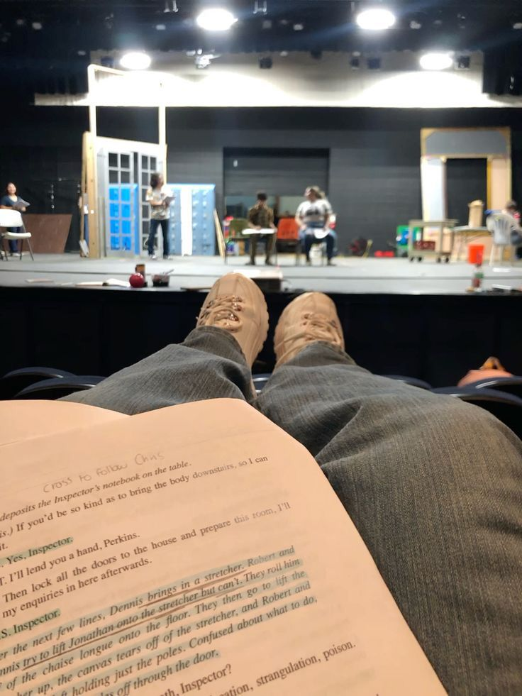

Главная
Каталог
Контакты
|
Услуги студии
-
Мастер-классы по актерскому мастерству

Для детей от 8 лет и взрослых
Подробнее о мастер-классе
Мастер-классы по актёрскому мастерству — это уникальная возможность погрузиться в мир театра,
раскрыть свой потенциал и научиться выражать эмоции через игру.
Занятия проводят профессиональные актёры и режиссёры с опытом работы в ведущих театрах Москвы.
- Для детей от 8 лет, подроствков, взрослых
- Длительность: 2 часа
- Формат: групповой (до 12 чел.) или индивидуальный
- Что включено:
- Разминка и техника речи
- Игровые упражнения
- Работа с текстом и монологами
-
Актерская подготовка к кастингам и просмотрам
Работа с репертуаром, монологами, импровизация
Подробнее об актерской подготовке
Готовьтесь уверенно — проходите отбор с первого раза.
Независимо от того, идёте ли вы на кастинг в кино, сериал, рекламу или театральный проект —
первое впечатление решает всё. Наша подготовка помогает не просто выучить монолог,
а проявить себя как актёра — ярко, честно и профессионально.
- Подбор и адаптация монолога под ваш типаж, возраст и проект
- Работа над речью: дикция, темп, интонация, работа с паузами
- Физическое присутствие: пластика, жест, взгляд, работа с пространством
- Импровизация и реакция на режиссёрские замечания — учимся «переключаться» прямо на прослушивании
- Разбор типичных ловушек на кастингах и рекомендации по внешнему виду/поведению
- Форматы:
- Разовое занятие (2 ч) — идеально для срочной подготовки
- Курс из 4–6 занятий — глубокая работа под конкретный проект или развитие универсальных навыков
- Онлайн или очно — по вашему выбору
-
Театральная терапия
Для групп и индивидуальных занятий - снятие стресса через игру
Подробнее о терапии
Игра как путь к себе — без оценок, без сценария, с поддержкой.
Театральная терапия — это не про «играть лучше», а про освободить эмоции,
лучше понять себя и наладить контакт с другими.
Мы используем методы режиссёрской и актёрской работы в безопасной, поддерживающей среде.
- Творческое самовыражение через образ, движение, голос
- Снятие внутреннего напряжения через игровую импровизацию
- Ощущение ресурса и лёгкости после занятий
- Уверенность в общении и публичных выступлениях
- Для кого это:
- Люди, испытывающие тревожность, стресс, эмоциональное выгорание
- Подростки — для развития уверенности и навыков общения
- Все, кто хочет выразить то, что сложно сказать словами
-
Постановка спектаклей
Полный цикл: от сценария до премьеры
Подробнее о постановке спектаклей
От идеи - до премьеры. Ваш спектакль, созданный с душой и профессионализмом.
Независимо от того, нужен ли вам школьный спектакль, благотворительная постановка,
корпоративное шоу или любительская премьера — мы возьмём на себя полный цикл создания спектакля.
-
Концепция и сценарий:
- адаптация классики или написание оригинальной пьесы под ваш запрос
-
Кастинг и репетиции:
- подбор актёров (или работа с вашей группой), регулярные репетиции
-
Режиссура и постановка:
- работа над характерами, мизансценами, драматургией действия
-
Сценическое оформление (по желанию):
- рекомендации по костюмам, реквизиту, свету и декорациям
|